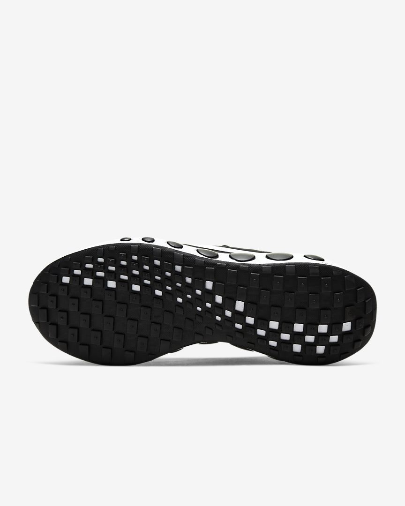
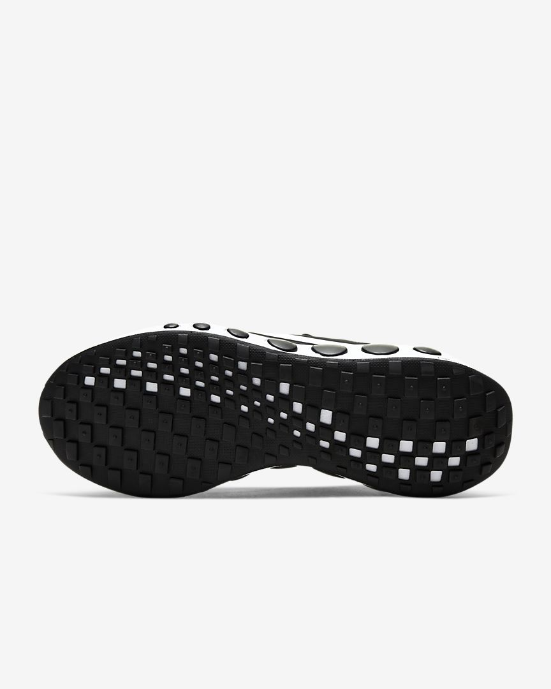

The Nike CruzrOne is designed for steady, light movement. The curved sole and the soft, lightweight cushioning ensure natural movements and comfort. The padded shoe collar with soft wool ensures comfort with every step. Mesh details ensure breathability. There is no finish line - there is only one step at a time.
The rubber sole provides traction and durability. The wool lining is quick drying and can be worn with or without socks. The midsole design matches the circular pattern on the heel and ensures a uniform look.